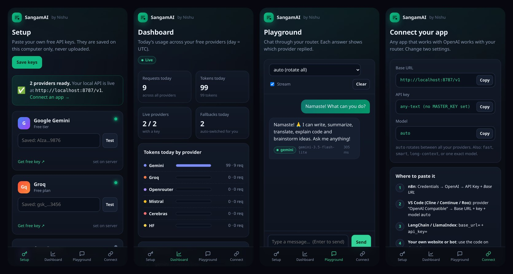

🔁
Auto-fallback
429, quota, 5xx, timeout or out-of-credits on one provider → the same request goes to the next one.
SangamAI · 100% free · open source · runs on your PC and phone
Paste your free Gemini, Groq, OpenRouter and Mistral keys into a simple web page. Get one OpenAI-compatible endpoint on localhost. When one provider hits its limit, the next one answers automatically.
git clone https://github.com/shanir01/SangamAI.git
cd SangamAI
sh start.shNo card. No server. No sign-up with us. Your keys stay on your device.
What it is
Big AI companies give every developer a free daily quota. SangamAI joins all those free quotas into one API that every OpenAI app already understands. One key runs out? It quietly switches to the next.
Sangam (संगम) is where rivers meet. In SangamAI, every free AI meets in one API.
Open the Setup page, click “Get free key”, paste, press Test.
Point any app to http://localhost:8787/v1 with model auto.
Limit hit, error or timeout → the same request goes to the next provider.
Honest note: nothing is “unlimited”. Every provider has a daily limit. This app adds them up so you get far more free requests than any one key gives.
Features
429, quota, 5xx, timeout or out-of-credits on one provider → the same request goes to the next one.
Model auto rotates providers on every request, so your free limits are used evenly.
/v1/chat/completions (normal + streaming) and /v1/models. Works with OpenAI SDKs, n8n, LangChain, Continue, Cline.
Paste keys in the browser, test them against the real provider, save. No file editing.
Tokens and requests per provider, which one is live, and a fallback log.
Chat in the browser. Every answer shows which provider replied and how fast.
Termux on your phone runs the full router. One command: sh start.sh.
Pure Node.js 20+. No npm install, no Docker, no database.
Listens on localhost only. Only free models are called. Keys never appear in logs.
The app
Setup, Dashboard, Playground and Connect pages run in your browser at localhost:8787. (Screenshots with demo data.)

Where to get the API keys
You need at least one. More keys = more free requests. Each takes about a minute. Keep them private: never post them in chats, screenshots or GitHub.
gsk_). It is shown only once!AIza)sk-or-). No credits needed: only :free models are usedThen: open http://localhost:8787 → Setup → paste the key in its card → Test (✓) → Save keys. It works instantly, no restart.
| Provider | Free limit | Good to know |
|---|---|---|
| Groq | 30 req/min · 1,000 req/day per model | Fastest. 200K tokens/day per model. |
| Gemini | Shown in AI Studio (per model) | Resets at midnight Pacific. Free tier prompts may be used by Google to improve products. |
| OpenRouter | 20 req/min · 50 req/day (whole account) | 1,000/day once you have ever bought $10 of credits. |
| Mistral | Monthly free usage (see your Limits page) | Good all-rounder model: mistral-small. |
⚠️ Never add a credit card to these free accounts. Without a card, hitting a limit just pauses that provider: nothing can be charged.
PC setup
Needs Node.js 20 or newer. The start script tries to install it for you if it is missing.
git clone https://github.com/shanir01/SangamAI.git
cd SangamAI
sh start.shsh start.sh.Mobile setup
Your phone becomes your own AI server. Takes about 5 minutes the first time.
pkg update -y && pkg upgrade -ypkg install git -y
git clone https://github.com/shanir01/SangamAI.gitcd SangamAI && sh start.shhttp://localhost:8787/v1 in any AI app on the same phone. Keep Termux running (the script holds a wake-lock).cd SangamAI && sh start.sh💡 Tip: if Android closes Termux in the background, open phone Settings → Apps → Termux → Battery → Unrestricted.
Connect your app
Change only two settings in your app. The router does the rest.
http://localhost:8787/v1localautopip install openaifrom openai import OpenAI
client = OpenAI(base_url="http://localhost:8787/v1", api_key="local")
reply = client.chat.completions.create(
model="auto",
messages=[{"role": "user", "content": "Namaste! Explain AI in one line."}],
)
print(reply.choices[0].message.content)npm install openaiimport OpenAI from "openai";
const client = new OpenAI({ baseURL: "http://localhost:8787/v1", apiKey: "local" });
const reply = await client.chat.completions.create({
model: "auto",
messages: [{ role: "user", content: "Namaste! Explain AI in one line." }],
});
console.log(reply.choices[0].message.content);curl http://localhost:8787/v1/chat/completions \
-H "Authorization: Bearer local" \
-H "Content-Type: application/json" \
-d '{"model":"auto","messages":[{"role":"user","content":"Namaste!"}]}'local · Base URL: http://localhost:8787/v1auto.http://host.docker.internal:8787/v1 and start the router with HOST=0.0.0.0 + a MASTER_KEY.autorotates all providers, with fallback (default)fastsmall, quick models firstsmartbigger models firstlong-contextGemini first (1M-token context)FAQ
No. Every provider has a daily free limit. SangamAI adds those limits together and switches automatically, so you get a lot more than one key gives, for ₹0.
No. The code is free (MIT), the keys are free, and it runs on your own PC or phone. Just don’t add a card to the provider accounts.
Only on your device, in keys.local.json inside the folder (it is git-ignored). The dashboard shows only the first and last 4 characters. Nothing is sent to us.
Groq: the biggest daily free limit and very fast. Add Gemini next for long documents.
No key is saved yet. Open http://localhost:8787 → Setup, paste a key, press Test, then Save keys.
The key is wrong or got cut while copying. Copy it again from the provider’s page.
Yes: start it with HOST=0.0.0.0 and set a MASTER_KEY (required for safety), then use http://<your-local-IP>:8787/v1.
Yes, with Server mode (off by default): user keys with daily token limits and a Render one-click deploy. All users share your free limits, so read each provider’s terms first.
A star helps more people find free AI. It takes one tap and means a lot.